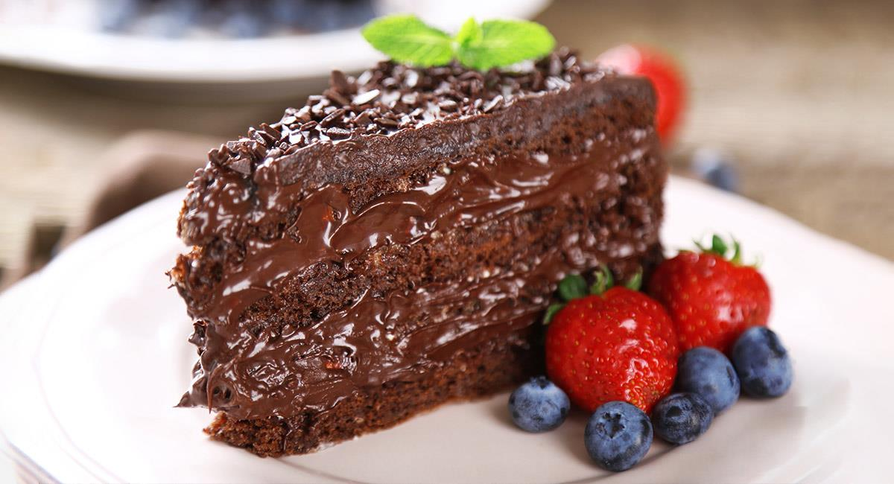
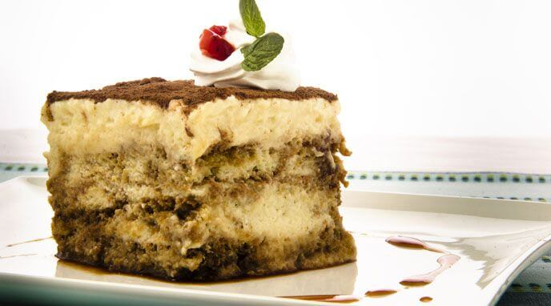
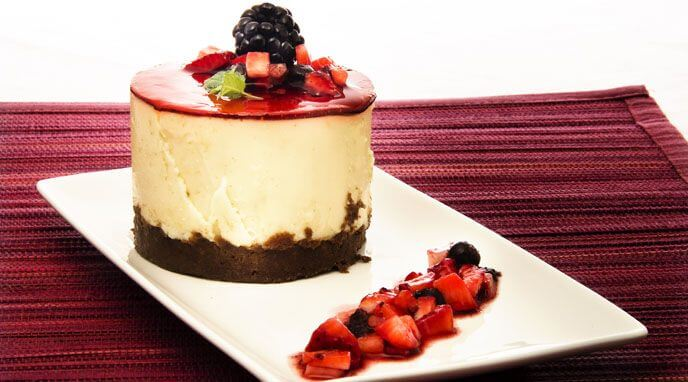
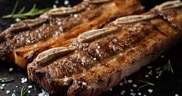
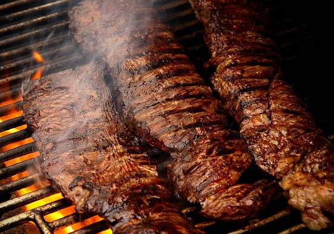
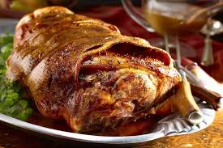

Categorías Populares
Postres 🍰

Torta de chocolate
Un clásico de la repostería, la torta de chocolate es un postre rico y decadente que es perfecto para cualquier ocasión.
Ir a la receta
Tiramisú
Un postre clásico de la cocina italiana, el tiramisú es un plato rico y delicioso que es perfecto para cualquier ocasión.
Ir a la receta
Cheesecake de frutas
Un postre fresco y delicioso, el cheesecake de frutas es un plato perfecto para el verano.
Ir a la receta
Crema Catalana
Un postre clásico de la cocina italiana, el tiramisú es un plato rico y delicioso que es perfecto para cualquier ocasión.
Ir a la recetaCarnes 🥩

Tira de Asado
Un clásico de la cocina argentina, el asado de tira de asado es un plato rico y jugoso que es perfecto para cualquier ocasión
Ir a la receta
Churrasco a la parrilla
Un clásico de la cocina argentina, el churrasco a la parrilla es un plato rico y jugoso que es perfecto para cualquier ocasión.
Ir a la receta
Carne de cerdo al horno
- Un plato clásico de la cocina española, la carne de cerdo al horno es un estallido de sabores y aromas que te transportará a las calles de Madrid.
Ir a la recetaChoripan
Un clásico de la cocina argentina, el choripán es un plato rico y jugoso que es perfecto para cualquier ocasión.
Ir a la receta